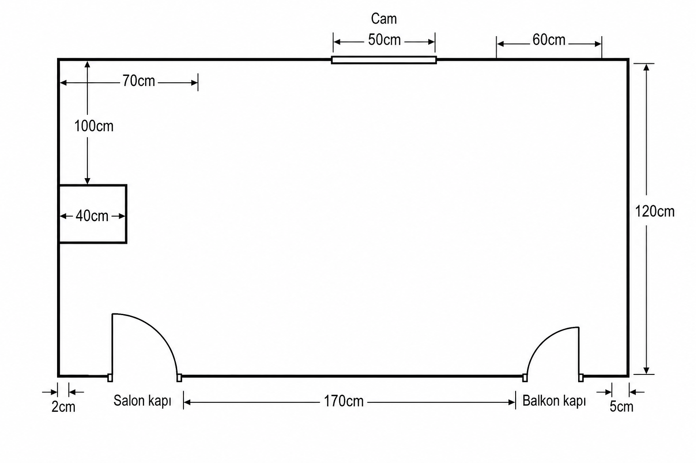

2 · Salon · 170 · Balkon · 5
İki kapı aynı duvarda. Arada 170 cm düz duvar. Köşelerde 2 cm ve 5 cm pay.
Senin ölçülü çizimin · cm cm · ekstra yok
Salon kapı · 170 cm · Balkon kapı · Cam · Kiriş 40 cm. Hepsi senin krokinden.
Son gönderdiğin çizimdeki etiketler. Kapı yerleri ve kiriş aynen; uydurma girinti yok.

Sadece krokiye yazdığın cm’ler — yorum yok.
İki kapı aynı duvarda. Arada 170 cm düz duvar. Köşelerde 2 cm ve 5 cm pay.
Odaya doğru dikdörtgen çıkıntı (kiriş). Dışarı niş çizilmedi. Üst sol: 70 cm / 100 cm.
Karşı duvarda cam. Yanında 50 cm ve 60 cm işaretleri. Altında petek (önceki tarif).
Düz sağ duvar, krokiye 120 cm yazılmış.
Bu ölçülere göre — kapı salınımlarına ve kirişe çarpmadan.
Geçiş öncelikli. İnce konsol / ayakkabılık salınım dışına; ortayı kapatma.
Dar masa (FJÄLLBO 100×36). Petek önü boş.
Kısa duvar: dar KALLAX veya tekli oturma. BESTÅ 120 sınırda — net boyu metre ile doğrula.
Çıkıntıya yaslanma. Yanındaki düz yüzde ince raf.
Cam tarafına. 303.397.35
ikea.com.tr →702.611.50
ikea.com.tr →Sağ 120 cm duvara aday. 202.758.85
ikea.com.tr →Sağ duvar 120 cm ise birebir sınır — yerinde ölç. 590.594.61
ikea.com.tr →